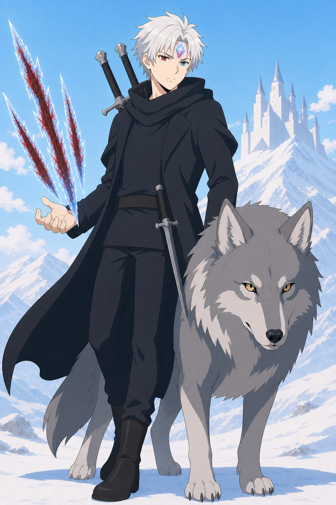

CHARACTER BIBLE · CANON ART
누가 이 세계를
바꾸는가.
후보와 이전 시안을 걷어내고 현재 확정된 인물만 모았습니다. 카드를 누르면 능력과 역할을 확인할 수 있습니다.

CAST
정본 캐릭터
갤러리
같은 인물을 반복한 단체 시안은 제외하고, 관계를 보여주는 장면과 인물별 최종 디자인만 남겼습니다.
STORY ROLE
인물은 전투보다
선택으로 기억됩니다.
각 인물의 관계와 변화는 소설판에서 가장 빠르게 확인할 수 있습니다.